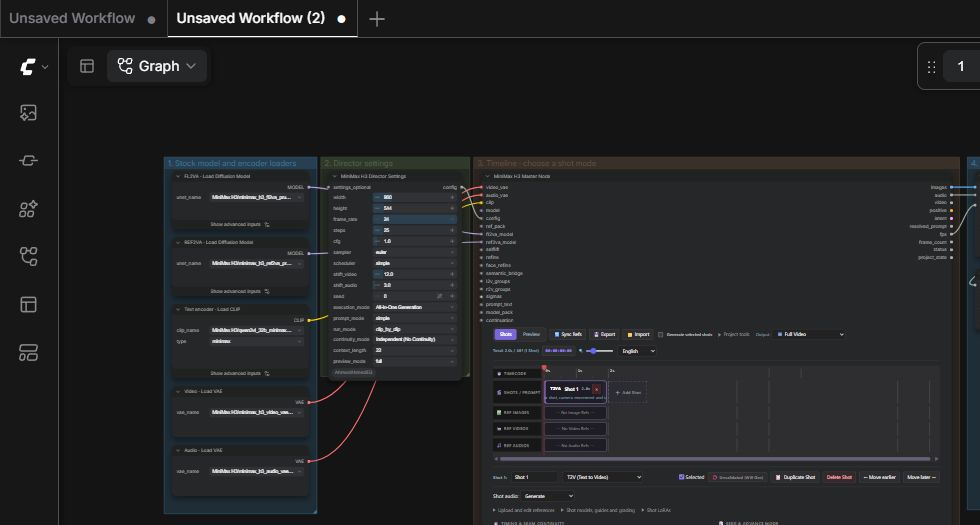
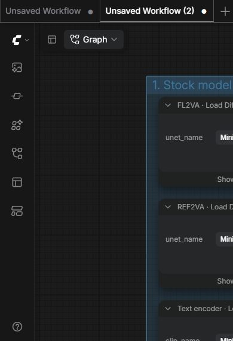
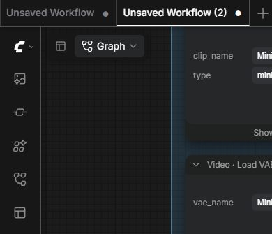
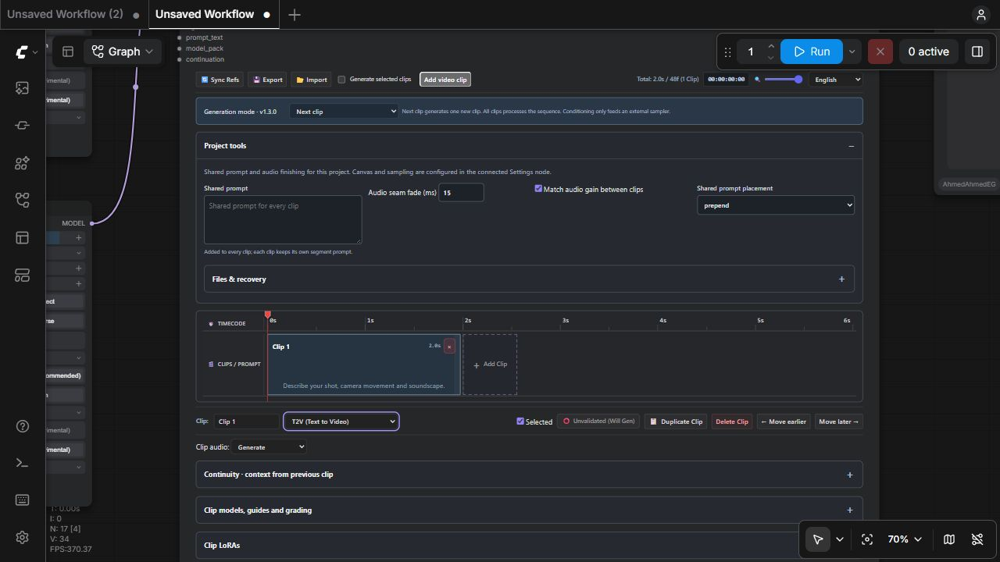
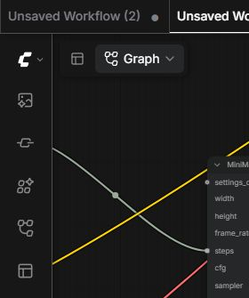

Getting started
Generate one short video, review the take, then add the next shot. The starter already has the necessary connections and connects the Master to a separate Smart Preview node.
Before you touch a setting
ComfyUI is a visual recipe. Each box is a node: a small tool that loads a file, supplies settings, generates media or saves a result. The whole collection of boxes and connections is a workflow.
A node takes information through its input sockets on the left and passes results through its output sockets on the right. The curved lines are cables. To connect nodes, drag from an output dot to the matching input dot. Different data types need matching sockets: a MODEL connection carries an AI model, not a picture.
The starter already has the cables connected. You do not need to rebuild it. Your first job is to select the installed files, write one prompt and click Run. Run follows the connections automatically; you do not run each box separately.
Read the actual starter workflow


Actual starter JSON opened in the installed ComfyUI frontend. Click the image to open it at full size. This shows the graph, not an AI-generated illustration.
| Box you see | What it does | What you do first |
|---|---|---|
| FL2VA · Load Diffusion Model | The video-making AI used for text and opening/closing-picture shots. | Select the installed FL2VA file. |
| REF2VA · Load Diffusion Model | The video-making AI for reference-guided and video-editing shots. | Select the installed REF2VA file. It can stay connected during text-only generation. |
| Text encoder · Load CLIP | Converts your written prompt into numbers the video AI can understand. | Select the MiniMax text encoder file and set its type dropdown to minimax. |
| Video · Load VAE | Loads the decoder that converts compressed video data into visible frames. | Select the video VAE file. |
| Audio · Load VAE | Loads the decoder that converts compressed sound data into audible sound. | Select the audio VAE file. |
| Director Settings | Supplies size, sampling and execution settings. | Keep the starter values. |
| Master Node | Shot editor and generation controller. | Write the prompt and assign pool references. |
| Reference Pack | The single source of reference media. | Connect your media loaders and enter optional names. |
| H3 SLA Attention ×2 | Patches each model family’s attention. | Keep the supplied settings initially. |
| REF2VA Turbo LoRA + model/steps switches | Switches between base and LoRA-patched REF2VA. | One toggle selects both model and steps. |
| Smart Preview | Separate player connected to Master project_state. | Keep Latest clip selected. |
Director Settings, Master, Reference Pack and Smart Preview are this pack’s starter nodes. The other boxes are ordinary ComfyUI tools. The two VAEs and two diffusion loaders are intentional: each has a different job.
1. Install and load the starter
- Install this repository in your ComfyUI
custom_nodesfolder, install its requirements with ComfyUI’s Python, and restart ComfyUI. - Use native MiniMax H3 support and install plaguekind-nodes for H3 SLA Attention. The stock Boolean/model switch and LoRA loader are already in your supplied reference workflow.
- Download the starter above. The JSON is a workflow file containing the boxes and cables, not a model or a video. Drop it onto the ComfyUI canvas to load it. Find the custom nodes under ComfyUI-AhmedAhmedEG → Start here.
If this pack is already installed, skip installation and load the starter. Use a separate workflow tab if you want to keep another workflow open. After an update, refresh the browser so it loads the current editor.
2. Select the models
Use the two stock Load Diffusion Model nodes, stock Load CLIP with type minimax, and two stock Load VAE nodes. The saved selections are:
| Purpose | Starter selection | Master input |
|---|---|---|
| FL2VA model | MiniMax H3/minimax_h3_fl2va_pruned_int8_convrot.safetensors | fl2va_model |
| REF2VA model | MiniMax H3/minimax_h3_ref2va_pruned_int8_convrot.safetensors | ref2va_model |
| Text encoder | MiniMax H3/qwen3vl_32b_minimax_h3_nvfp4_awq.safetensors | clip (type minimax) |
| Video VAE | MiniMax H3/minimax_h3_video_vae_fp16.safetensors | video_vae |
| Audio VAE | MiniMax H3/minimax_h3_audio_vae_fp32.safetensors | audio_vae |
Choose equivalent installed files if your filenames differ. Both diffusion families stay connected; the Master lazily selects the one needed by each shot.




The dropdowns list files installed on the ComfyUI server. A file on your own computer will not appear in a remote server’s dropdown. If a required file is missing, install it on that server before running.
Attention and the fast LoRA switch
Each diffusion family passes through its own H3 SLA Attention node, using the settings from your supplied R2V workflow. Enable REF2VA Turbo LoRA switches the REF2VA branch between its base model and the selected LoRA-patched model. It does not patch FL2VA. The single Boolean toggle also selects sampling steps: 25 for the base model, 8 for the supplied Turbo LoRA. Edit the two integer nodes if you need other values. The model and step selectors are collapsed to keep their connected, redundant switch widgets out of the way. Director Settings steps is connected to the step selector.
3. Generate Shot 1
- Keep the starter’s Director Settings: 960 × 544, 24 fps, 25 steps, CFG 1, euler/simple, seed 0.
- Use Generation mode → Next shot and Independent (No Continuity) for this first test.
- In the Master, select T2V (Text to Video), duration 2 seconds and shot audio Generate.
- Paste the prompt below and click ComfyUI’s Run button.
A small robot walks through a sunlit greenhouse.
The camera tracks beside it. Leaves sway gently.
Soft footsteps and birds outside.
Edit the visible shot controls. Graph sockets are above this editor.


Wait for the run to finish before judging the result. Generation time depends on the server and chosen files. Clicking Run again adds another job; it does not make the current job faster.
4. Review the new clip
- In the separate Smart Preview node, choose Latest clip. This requests a separate file for only the newest completed shot.
- Use Full video when you want to watch the completed sequence. Enable Autoplay or use Save preview as needed.
- Validate a take you accept. Matching cached results can then be reused.
Preview copies fit within 960 × 540. Final export uses the generated frames at their configured size. Preview scope does not change which shots are generated.
5. Add references or another shot
- Opening image: connect Load Image to Reference Pack, name the image, choose I2V in the Master and assign that pool image as the opening frame.
- Subject/style/media references: connect media through Reference Pack, choose REF2VA, assign existing pool media and insert its prompt token, such as
<Picture 1>. Audio references also need visual references. - Next shot: click + Add Shot. Keep Independent for a separate scene, or select a chained continuity mode and an overlap such as 22 frames for a continuation.
- Review: watch Latest clip first, then Full video to inspect the join. Changing a chained predecessor can invalidate dependent takes.
For advanced media trimming, source edits and saved-take continuation, see MiniMax H3 Master Node and MiniMax H3 Load Take Checkpoint.
6. Save a preview or export the final video
Save preview in Smart Preview downloads the displayed preview file. Latest clip downloads only that clip. Full video downloads the preview of the completed sequence. These are preview-resolution copies.
For a final-resolution file, load MiniMax H3 Consolidated.json. Its Create Video → Save Video connections package and save the Master’s images, audio and fps. The starter deliberately ends at Smart Preview: Master project_state connects to the separate player.
Common first-run problems
- UNKNOWN node: update/restart the pack, refresh ComfyUI and load the current starter. Older graphs can contain removed wrapper nodes.
- Missing model/input: check the family model, minimax CLIP, both VAEs and the assigned references.
- Out of memory: shorten the shot or lower resolution before adding optional quality stages. Large text encoders also use memory.
- No preview: generate a completed take first. Workflows do not contain saved cache tensors; those stay on the server.
Words you will meet
| Word | Meaning |
|---|---|
| Prompt | Your written instructions: action, appearance, camera movement and sound. |
| Model / checkpoint file | A trained AI file on the ComfyUI server. Selecting it does not download it. |
| Shot / clip | One short piece of the sequence. This editor uses “shot” for its timeline clips. |
| Take | One generated version of a shot. A new attempt can produce another take. |
| Frames / IMAGE | Individual pictures in order. IMAGE can carry a batch of many pictures. |
| fps | Frames per second. H3 generation uses 24; 24 pictures make roughly one second. |
| Latent | Compressed working data used by the AI. A decoder turns it into pictures and sound. |
| VAE | The encoder/decoder that converts between visible or audible media and compressed data. |
| Seed | The starting random number. Keep it fixed when comparing settings. |
| Steps | How many sampling iterations generation takes. More steps usually take longer and do not guarantee a better result. |
| CFG | A sampling control for guidance from the prompt. Keep the H3 starter value of 1 initially. |
| Reference | A picture, video or sound you ask the AI to follow. |
| Continuity | Using the end of the previous shot to help the next shot continue it. |
| Cache / validated | Stored completed results / a shot marked approved for reuse. Changed inputs can still require regeneration. |
| T2V / I2V / FL2V | Text-to-video / image-to-video / first-and-last-frame-to-video. Choose T2V for a written description alone. |
| REF2VA / V2V / RV2V | Reference-guided video and audio / video editing / reference video editing. These need the REF2VA model. |
| Denoise | How much a refinement pass may alter an existing result. A higher setting can change its content more. |
| LoRA | A small additional model file that modifies a base model, often for a style or subject. It is optional. |
| RefMod | A reference model/bundle treated as a reference asset, rather than a LoRA patch. |
| Sampler / scheduler | The method and sequence of noise levels used during generation. Keep euler/simple to begin. |
| Upscale | Increase the picture dimensions. Enlarging does not guarantee newly correct details. |
| Config / pack | A bundle of instructions or assets passed through a socket; it is not finished media. |
You do not need all 23 custom nodes. Start with the four pack nodes in the starter. Visit another node’s page when you need the specific job it performs; each page now begins with a plain-language explanation and a first-use example.